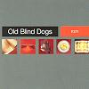

Celtic Lyrics Corner > Artists & Groups > Old Blind Dogs > Fit? > Is There For Honest Poverty
|  | Is There For Honest Poverty |
| Credits : | Robert Burns; arranged by Old Blind Dogs |
| Appears On : | Fit? |
| Language : | Scots-English |
| Other Versions : | " A Man's A Man For A' That " on Old Blind Dogs' album Play Live |
Lyrics :
Is there for honest poverty
That hings his head an' a' that?
The coward slave, we pass him by
We dare be poor for a' that
For a' that, an' a' that
Our toils obscure an' a' that
The rank is but the guinea's stamp
The man's the gowd for a' that
What though on hamely fare we dine
Wear hoddin gray an' a' that?
Gie fools their silks and knaves their wine
A man's a man for a' that
For a' that, an' a' that
Their tinsel show an' a' that
The honest man though e'er sae poor
Is king o' men for a' that
Ye see yon birkie ca'd a lord
Wha struts an' stares an' a' that?
Though hundreds worship at his word
He's but a cuif for a' that
For a' that, an' a' that
His ribband, star, an' a' that
The man o' independent mind
He looks an' laughs at a' that
A prince can mak a belted knight
A marquis, duke, an' a' that
But an honest man's aboon his might
Guid faith, he mauna fa' that
For a' that, an' a' that
Their dignities an' a' that
The pith o' sense an' pride o' worth
Are higher rank than a' that
Then let us pray that come it may
As come it will for a' that
That sense and worth o'er a' the earth
Shall bear the gree an' a' that
For a' that, an' a' that
It's comin' yet for a' that
That man to man the world o'er
Shall brithers be for a' that